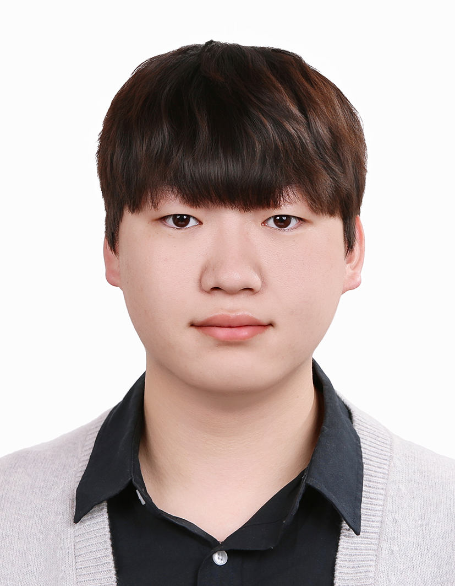
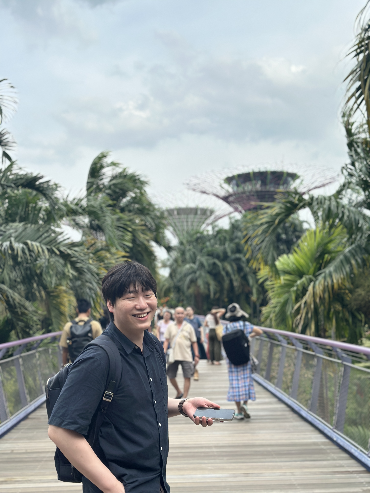
Jihun Park
I'm a M.S.-Ph.D. integrated course student at the Department of Artificial Intelligence at DGIST, South Korea, working under the supervision of Prof. Sunghoon Im at the DGIST Computer Vision Lab.
Previously, I earned a B.S. degree from the Department of Mechanical Engineering, Zhejiang University, in 2022. My research interests include computer vision and deep learning, focusing on Image/Video Generation (Autoregressive, Diffusion), Style Transfer, and Vision-Language Tasks.
News
- Mar 2026One paper accepted to IEEE Signal Processing Letters (SPL).
- Feb 2026Two papers accepted to CVPR 2026 and one paper accepted to CVPR 2026 Findings.
- Feb 2026Our team received the Encouragement Prize from the 32nd Samsung Human-Tech Paper Award.
- Dec 2025Started a Generative Model Research Intern position at Baidu Inc. Global Business Unit (3 months).
- Nov 2025AI-driven artworks by our research team exhibited at DGIST Gallery. View the curation
- Nov 2025One paper accepted to AAAI 2026 as an oral paper.
- Oct 2025Received the Best Oral Presentation Award from DGIST EECS/AI.
- Jul 2025One paper accepted to ICCV 2025 Workshop.
- Jul 2025Attended ICVSS 2025 in Sicily, Italy.
- Feb 2025One paper accepted to CVPR 2025 as a highlight paper (Top 3.7%).
- Oct 2024One paper accepted to ACCV 2024.
- Feb 2024Our team received the Encouragement Prize from the 30th Samsung Human-Tech Paper Award.
Publications
* indicates equal contribution. † indicates the corresponding author.
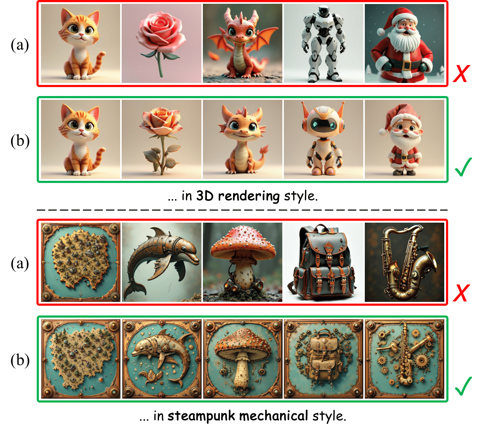
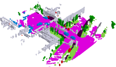
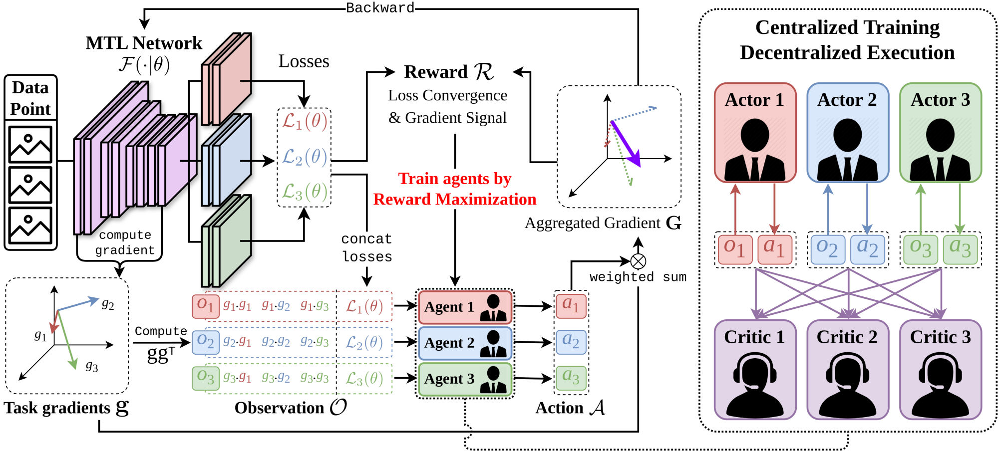
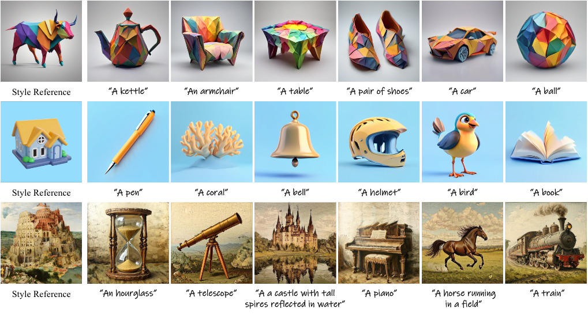
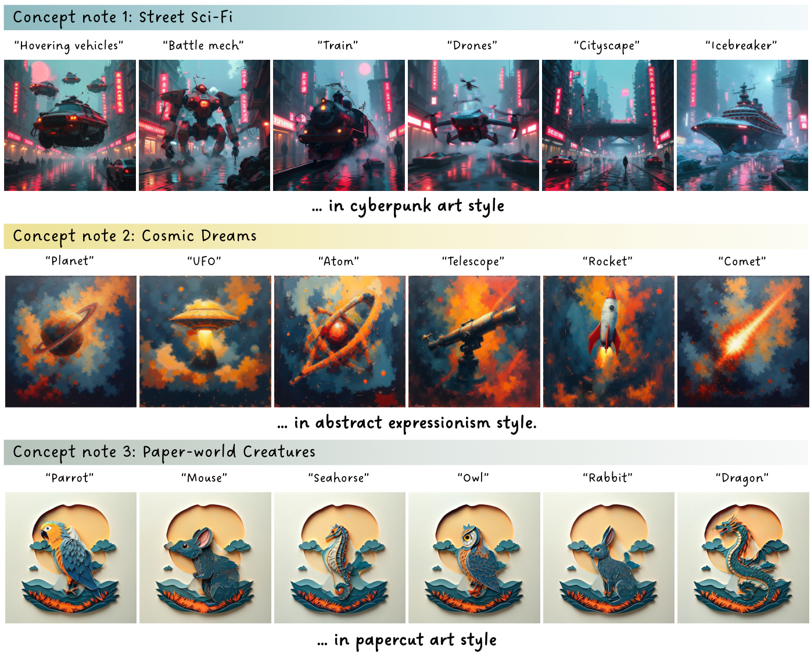
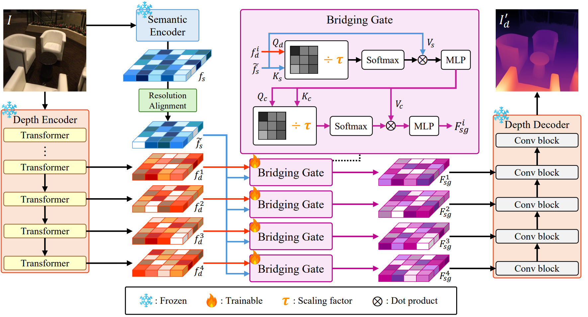
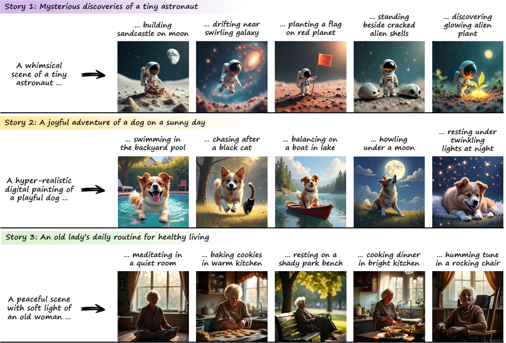
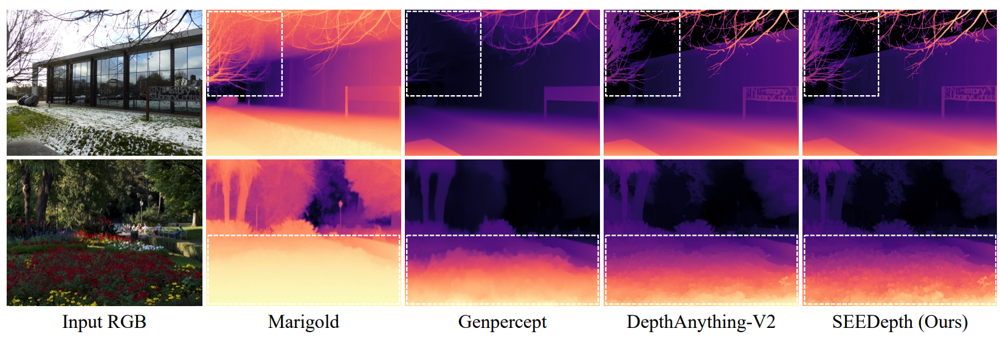
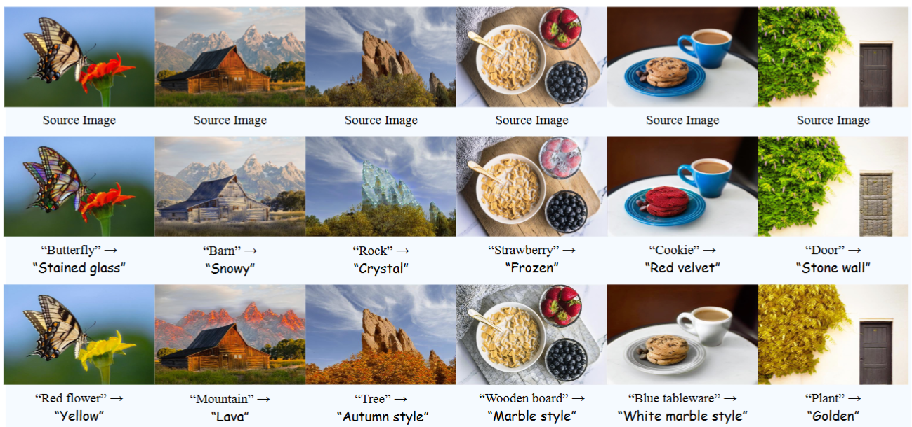
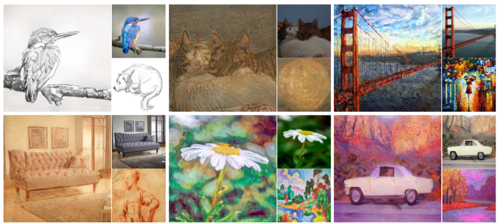
Education & Experience
Generative Model Research Intern (Advisor: Yan Zhang)
Baidu Global Business Unit, Shenzhen, China
Dec. 2025 – Mar. 2026
M.S.-Ph.D. Integrated Course (Advisor: Sunghoon Im)
Department of Artificial Intelligence, DGIST, South Korea
Mar. 2023 – Present
Bachelor's Degree
Department of Mechanical Engineering, Zhejiang University, China
Sep. 2018 – Jul. 2022
Chungnam Samsung Academy, South Korea
Mar. 2015 – Feb. 2018
Academic Activities
- Encouragement Prize, 32nd HumanTech Paper Award, Samsung Electronics Co., Ltd, Feb. 2026
- Best Oral Presentation Award, DGIST EECS/AI Student Conference, Oct. 2025
- Encouragement Prize, 30th HumanTech Paper Award, Samsung Electronics Co., Ltd, Feb. 2024
- The Association for the Advancement of Artificial Intelligence (AAAI), 2026
- Invited Speaker of DGIST Generative AI Integrated Seminar, Oct. 2024
- Teaching Assistant (TA), Advanced Deep Learning, Mar–Jun 2024
- Exhibition of our team's research on AI-driven art at DGIST, Nov. 2025 – Feb. 2026
- Attended International Computer Vision Summer School (ICVSS 2025) in Sicily, Italy, Jul. 2025
- Selected to represent DGIST at the official institutional booth during the 2025 Korea Science Festival, Apr. 2025